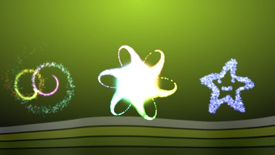
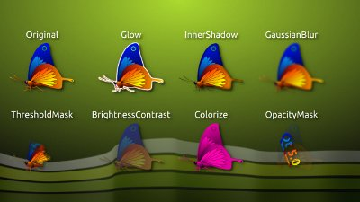
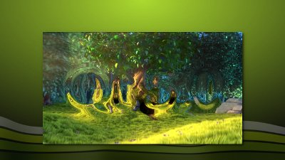
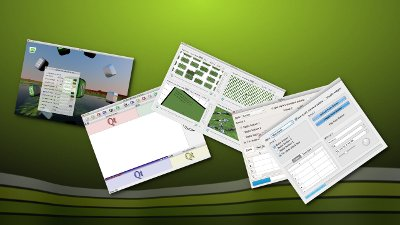

What's New in Qt 5
Qt 5 is the latest version of Qt. It enables developers to develop applications with intuitive user interfaces for multiple targets, faster than ever before. Qt 5 makes it easier to address the latest UI paradigm shifts that touch screens and tablets require.
Developers can be more productive and flexible with the improved support for JavaScript and QML in Qt 5, while still having the C++ foundation and Qt Widget support. The JavaScript backend powered by V8 and Qt WebKit 2 will make HTML5 developers feel at home.
Qt 5 is highly compatible with Qt 4. It is possible for developers of Qt 4 applications to seamlessly move on to Qt 5 with their current functionality and gradually develop new things leveraging all the great items Qt 5 makes possible.
Cross-platform portability is made simpler in Qt 5, thanks to the new modularized codebase consisting of the essential and add-on modules, and the consolidation of the Qt Platform Abstraction.
The following sections summarize some of the key features that Qt 5 brings to the table.
Amazing Graphics Capability and Performance
Qt 5 uses an OpenGL based scene graph to accelerate the graphics of Qt Quick, making it possible to do visually appealing user interfaces with animations, impressive graphical effects and particle systems, even on the constrained hardware environments of mobile and embedded devices.
| ShaderEffect on an Image |
|---|
The benefits of this architectural change in the rendering engine is well demonstrated by the following projects:
- Livecoding video effects with Qt5 - The Big Buck Bunny you never saw before. Video effects created using Qt Quick.
- Pimp my video - Video effects implemented using the shader language with QML.
- QtMediaHub - The power and convenience of Qt Quick.
- QtonPi - Good example of Qt 5 running on the low cost hardware, Raspberry PI.
Qt Quick in Qt 5
Qt Quick provides the necessary infrastructure to develop QML applications. The latest version (v2.0) of this technology also introduces a set of new C++ classes as a replacement for the QDeclarative* equivalents in Qt Quick 1. New features in Qt Quick include:
- Canvas for drawing. Canvas provides an API that is similar to the HTML5 Canvas API, along with some additional features.
- Shader Effects which enable GLSL shader programs to be integrated directly into QML code and applied to items and images.
- Particle Effects for creating a variety of 2D particle systems.
- Sprites can be used in animating 2D graphical objects and as a source for particle systems.
- Offline storage is a HTML5 Web Database API conformant JavaScript API for storing data in Qt Quick applications.
- Window provides a top-level window and the Screen type for accessing a screen's resolution and other details. This is useful for desktop applications developed using Qt Quick.
- New rendering architecture based on OpenGL for optimal performance.
| Qt Quick's Particle System |
|---|
 |
The Qt Graphical Effects module provides a number of ready-made effects for use in Qt Quick applications, including soft drop shadow, blur, glow and colorize.
| Excerpts from the Qt Graphical Effects module. |
|---|
 |
WebKit and HTML5
Qt WebKit is a web content rendering engine based on the open source WebKit project featuring broad support for standard web technologies. The Qt WebKit module provides integration with both Qt Quick and traditional widgets. The module brings the latest in HTML5 advancements to Qt 5, including CSS filters and animations and Video, Canvas and WebGL, Canvas support and HTML video.
Multimedia
Qt Multimedia provides a rich set of QML types and C++ classes to handle multimedia content. It also provides necessary APIs to access the camera and radio functionality. Qt 5 brings the Qt Multimedia module into the set of essential modules with support on all major platforms.
| Video embedded into a Qt Quick application with a displacement effect |
|---|
 |
Modularized Qt Libraries
Qt 5 splits the Qt libraries into domain specific libraries and modules. This means that an application can choose which libraries it requires and only compile, use and deploy those.
For a complete list of modules and libraries, see all Qt modules.
Widgets in Qt 5
The Qt Widgets have been separated into their own module in Qt 5, the Qt Widgets module. It is part of the essential modules.
| Screenshots of widget based applications running Qt 5. |
|---|
 |
Qt Platform Abstraction
The windowing system dependent parts of Qt have been completely rewritten for Qt 5, based on the Qt Platform Abstraction, a plugin architecture which allows Qt to dynamically load a windowing system integration based on what system it is running on. This gives several benefits:
- Centralize the windowing system integration codebase into classes shared for all platforms.
- Simplify the work required when porting Qt to new platforms.
- Remove the windowing system dependency from Qt, making it possible to have the same Qt binaries run against multiple windowing systems. For instance, the Qt Linux binaries can run against both X11 and Wayland.
New Connection Syntax
In addition to the still available well known way to connect signals and slots, new overloads of QObject::connect have been added allowing you to connect signals and slot using pointer to member functions:
QObject::connect(sender, &Sender::valueChanged, receiver, &Receiver::updateValue);
The new syntax provides compile time checking of the compatibility between signals and slots, automatic conversion of the arguments if there is an implicit cast between the types, and solve many problems occurring because of typedef or namespaces.
Additionally, if your compiler supports C++11 lambdas, you can even connect directly to a lambda function.
connect(sender, &QObject::destroyed, [=](){ this->m_objects.remove(sender); });
Connectivity and Networking
Qt 5 provides better support for IPv6 and dual mode networks. Most applications using host names and network layer transparent protocols can now gain IPv6 support transparently. Such applications can also choose to receive both IPv4 and IPv6 connections or bind to only one of the two connection types. In the case of outgoing HTTP connections using QNetworkAccessManager, both IPv4 and IPv6 connections are attempted in parallel, and the one that succeeds first is used. This is useful in environments where one of the two types has limited connectivity.
Qt 5 also provides better ways to handle TCP socket-based connections and SSL certificates. This means developers can now:
- bind a TCP socket to an IP address before connecting,
- verify an SSL certificate chain,
- and access legacy systems.
Stricter client authentication is one of the primary concerns for many applications handling confidential/critical data. The opaque Private Keys support in Qt 5 enables applications to read private keys from devices such as PKCS#11 dongles for stricter client authentication. The qsslkey example illustrates reading private keys from a device.
JSON Support
Qt applications that use simple data structures to store small amount of data, can now choose to use JSON documents over the complex database backends that need necessary drivers or plugins to access data. The fact that JSON is a text-based open standard derived from JavaScript, makes it the obvious choice for QML applications as well.
The Qt Core provides a set of classes to enable parsing and generating JSON documents. These classes also allow you to convert between an in-memory binary representation of JSON to a standard textual JSON format. The goal is to make common operations on JSON faster.
User Input
Qt 4 already had support for handling multi-point touch input in C++. Qt 5 extends this support to include Qt Quick, covering all the information about the touch points, including the touch position, pressure, and velocity.
The mouse event handling in Qt 5 has been improved from its predecessor. Applications have more control to handle mouse events in Qt Quick. The mouse area in a QML document can propagate the mouse wheel and click events and also ignore propagated events.
Besides this, Qt 5 adds support for more mouse buttons on platforms where this is supported. This comes in handy for gaming applications developed using Qt.